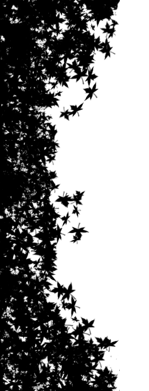

What is a meteor shower?


When you're looking up from Earth, the "shooting stars" that you see during meteor showers are actually the trails of white-hot air that meteors leave behind in our atmosphere as they burn. Meteor showers happen at the same times every year and can be seen without any special equipment, so go to the next slide to take a short quiz, and then continue on to find out when the next meteor shower will be!